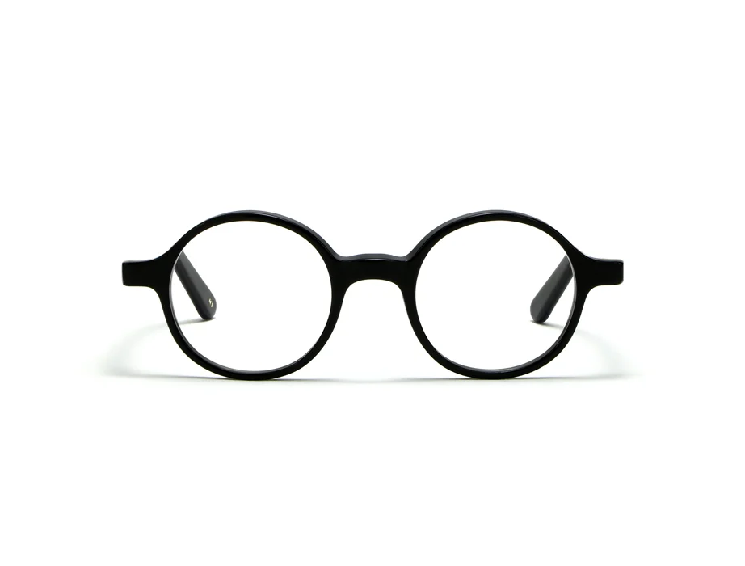
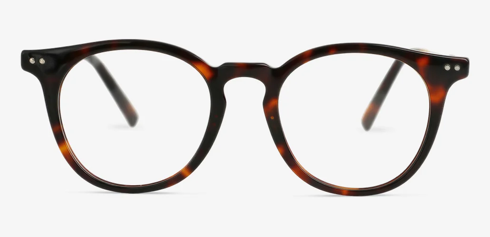
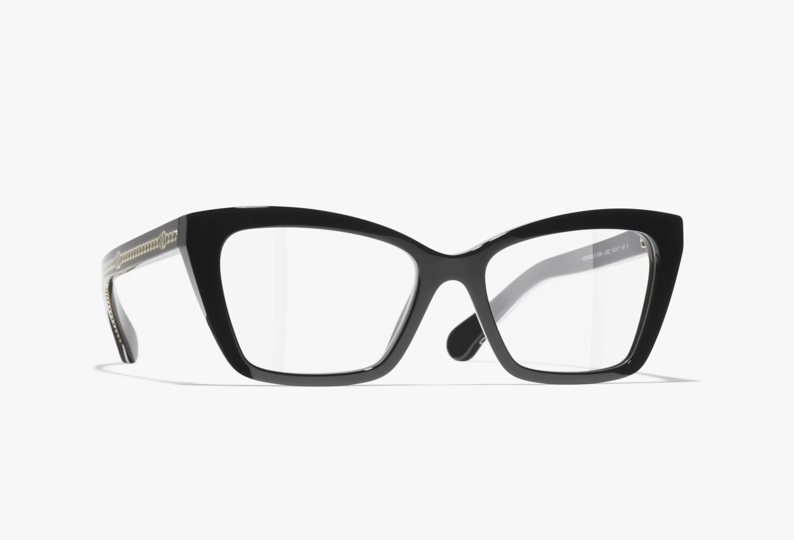
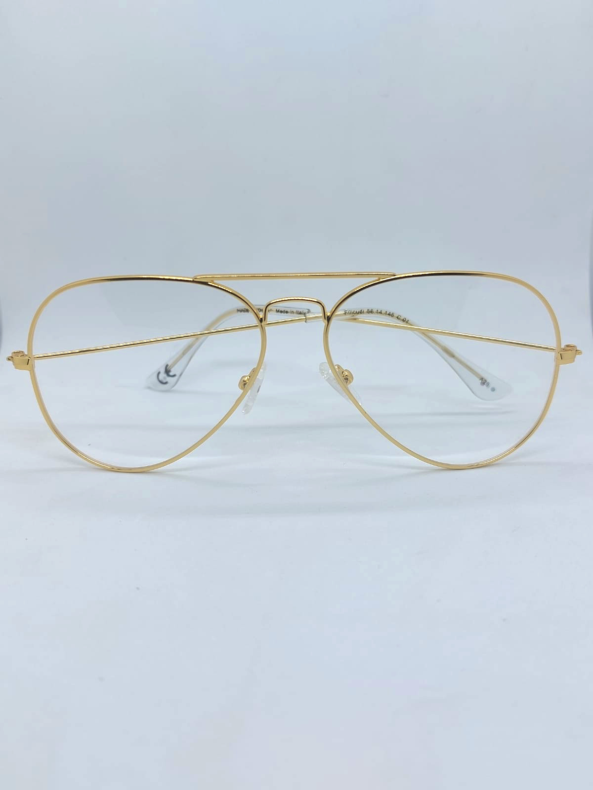

Il viso quadrato è caratterizzato da una fronte
larga, zigomi pronunciati e una mascella netta
e angolosa. La lunghezza e la larghezza del volto
sono generalmente simili e i lineamenti risultano
ben definiti.
Quali occhiali scegliere?
Per valorizzare un viso quadrato, la regola principale
è creare un contrasto con le linee geometriche del volto.
È quindi preferibile scegliere montature dalle forme
morbide e arrotondate, capaci di addolcire gli angoli
della mandibola e armonizzare i lineamenti.
Le montature consigliate
Ecco le tipologie di montature che possono
valorizzare questa forma del viso:

Montature tonde e ovali
Sono una delle scelte più efficaci:
le curve morbide smussano visivamente
gli angoli della mandibola e addolciscono
i lineamenti, creando un piacevole contrasto
con la forma del volto.

Montature Panto
Sono caratterizzate da una linea leggermente
più dritta nella parte superiore e arrotondata
in quella inferiore. Questa particolare forma
contribuisce a bilanciare la fronte e
ad ammorbidire i lineamenti.

Montature Cat-eye (a farfalla)
Gli angoli leggermente sollevati verso l'alto
attirano l'attenzione sugli occhi e creano
un effetto visivo slanciato, aggiungendo
dinamismo e contrasto alle linee orizzontali
del viso.

Montature Aviator (a goccia)
La classica forma a goccia introduce
curve morbide che si armonizzano con
una mascella marcata, contribuendo
ad addolcire l'aspetto complessivo
del volto.
Lo sapevi che...?
La forma del viso non è tutto
La forma del viso è soltanto un punto di partenza: anche il colore, le dimensioni
della montatura e il tuo stile personale contribuiscono alla scelta degli occhiali giusti!